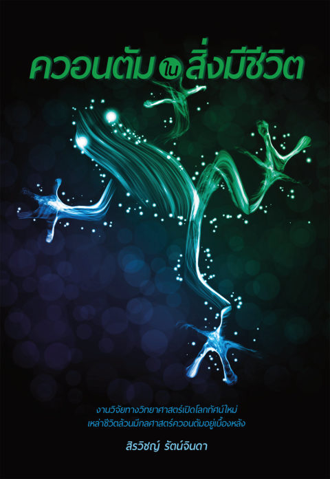

เปิด PDF ต้นฉบับเล่ม ๕ · คู่มือเดินทางแบบโต้ตอบ
ควอนตัมในสิ่งมีชีวิต
เล่มนี้พาไปดูว่าปรากฏการณ์ควอนตัมทำงานอยู่จริงในสิ่งมีชีวิต ตั้งแต่อุโมงค์ควอนตัมในปฏิกิริยาของโมเลกุล ไปจนถึงสัญญาณไฟฟ้าชีวภาพที่บอกเซลล์ว่าจะประกอบร่างเป็นรูปใด แล้วชวนตั้งคำถามว่าอะไรคือสิ่งที่อยู่เบื้องหลังรูปร่างและพฤติกรรมของชีวิต ปิดท้ายด้วยข้อเสนอของผู้เขียนเองเรื่องวิวัฒนาการทางจิตและวิญญาณ ที่โยงกลับไปหาคำสอนเรื่องกฎแห่งกรรม
แนวคิดหลักสามข้อของเล่มนี้
ชีวควอนตัม
สิ่งมีชีวิตไม่ได้ทำงานด้วยเคมีธรรมดาเท่านั้น แต่ใช้ปรากฏการณ์ระดับควอนตัมในโมเลกุลของตัวเองด้วย
ข้อมูลกำหนดรูป
รูปร่างของสิ่งมีชีวิตถูกกำหนดด้วยสนามข้อมูลและไฟฟ้าชีวภาพ ไม่ได้มาจากรหัสพันธุกรรมเพียงอย่างเดียว
จิตวิวัฒนาการ
จิตรู้สำนึกเกิดขึ้นตั้งแต่เซลล์แรกและวิวัฒนาการมาพร้อมกับร่างกาย เชื่อมกับสิ่งที่พุทธศาสนาเรียกว่าวิญญาณและกฎแห่งกรรม
เส้นทาง 19 บท · อ่านตามลำดับหรือข้ามไปบทที่สนใจก็ได้
๑ชีวิตคืออะไร ?คำถามที่นักฟิสิกส์ถามไว้ตั้งแต่ปี 1944 · ผลึกไร้คาบที่กลายเป็นดีเอ็นเอ · และสเปกตรัมของชีวควอนตัมอ่านได้
๒ชีวควอนตัมประโยคที่จริงแต่ไม่บอกอะไร · คำบรรยายปี 1932 ที่เปลี่ยนประวัติศาสตร์ · และชั้นความสามารถของเลวินอ่านได้
๓ชีวควอนตัมกับวิวัฒนาการชิ้นส่วนของชีวิตที่พบในอวกาศ · ช่องว่างที่ยังไม่มีใครข้าม · และปรัชญาในฐานะผู้แผ้วถางอ่านได้
๔สัญญาณเคมีกับชีวิตช่องทางที่ร่างกายคุยกับโลกโดยเราไม่รู้ตัว · ความจำที่ไม่ต้องมีสมอง · และคำถามที่ตอบไม่ได้เหมือนกันหมดอ่านได้
๕อุโมงค์ควอนตัมในโมเลกุลคลื่นที่ไม่หยุดตรงหน้ากำแพง · การทดลองที่ใช้เวลาสิบห้าปี · และเหตุผลที่อนุภาคเบาสำคัญกับชีวิตอ่านได้
๖การจับคู่โปรตีนแบบผสม (1)ภาพแม่กุญแจกับลูกกุญแจที่พังลง · ผู้ส่งสารที่ไม่ใช่ข้อความ · และเหตุผลที่ความยุ่งเหยิงทำให้แม่นยำขึ้นอ่านได้
๗การจับคู่โปรตีนแบบผสม (2)สิ่งที่การทดลองทำจริง · รหัสเชิงผสมในจมูกของคุณ · และสามประโยคท้ายบทที่ควรชะลออ่านได้
๘เอพิเจเนติกส์ เปิด-ปิดยีนตำราเล่มเดียวกันที่เปิดคนละหน้า · ป้ายสามชนิดบนจีโนม · และคำตอบที่มีแล้วของคำถามว่าเซลล์รู้ได้อย่างไรอ่านได้
๙เปิดยีนสุขภาพดีฤดูหนาวแห่งความหิวโหย · รอยของบุหรี่ที่ลบได้ · และคำแนะนำสองชุดที่ไม่เท่ากันอ่านได้
๑๐ซีโนบอตและลูกอ๊อดปิกัสโซ ชีวิตที่ประกอบร่างขึ้นใหม่ได้ก้อนเซลล์ที่ว่ายน้ำได้ · หน้ากบที่กลับมาเป็นปกติ · และคำในวงเล็บที่เปลี่ยนข้อเสนอทั้งข้ออ่านได้
๑๑อภิปรัชญาของชีววิทยา (1)ปัญญารวมกับไฟฟ้าชีวภาพ · บนลงล่างที่ไม่ได้เหนือกายภาพ · และก้นชามที่ไม่ได้ดึงลูกแก้วอ่านได้
๑๒อภิปรัชญาของชีววิทยา (2)สองสนามที่ไม่ใช่สนามเดียวกัน · ข้ออ้างที่ไม่มีทางผิด · และไดโนเสาร์ที่อ่านไม่ได้อ่านได้
๑๓พลานาเรีย สิ่งมีชีวิตอมตะหนอนที่ตัดแล้วงอกใหม่ · ความจำที่รอดจากการตัดหัว · และหนอนสองหัวที่จีโนมไม่ได้ถูกแตะอ่านได้
๑๔ไฟฟ้าชีวภาพควบคุมเซลล์มะเร็งเซลล์ที่หลุดออกจากวง · ชั้นควบคุมที่ต่อกันไม่ได้แข่งกัน · และประโยคที่ต้องปฏิเสธตรงๆอ่านได้
๑๕วิทยาศาสตร์กับจริยศาสตร์ประโยคเรื่องกรรมที่ต้องปฏิเสธ · ก้อนเกลือกับแม่น้ำ · และความดีที่วัดการแพร่ได้อ่านได้
๑๖ทฤษฎีวิวัฒนาการทางจิตการทดลองที่ตอบคำถามนี้ไปแล้วตั้งแต่ปี 1943 · พิษงูที่เล่าถูกครึ่งหนึ่ง · และพฤติกรรมที่นำหน้ายีนได้อ่านได้
๑๗หมึกยักษ์ เอเลี่ยนจากต่างดาวแขนแปดข้างที่คิดเองได้ · ตัวรับแสงที่หาเจอแล้วและอยู่ในผิวหนัง · และข้อมูลใหม่ที่ความบังเอิญสร้างได้อ่านได้
๑๘วิญญาณวิวัฒนาการรูปตัวซีที่ไม่มีใครคิดออก · เอ๊ะของผู้เขียนที่ดาร์วินก็เคยรู้สึก · และครึ่งหลังของคำว่าบังเอิญอ่านได้
๑๙บทสรุปของชีวิตคำว่าทุกข์ที่แปลให้ตรง · เพนโรสที่ไม่ได้พูดอย่างนั้น · มายากลที่เกิดขึ้นจริง · และแผนที่สี่ชั้นของทั้งเล่มอ่านได้
วิธีใช้คู่มือนี้
คำที่มีเส้นประสีทองข้างใต้ กดได้ทันที จะมีคำอธิบายภาษาคนธรรมดาขึ้นมาโดยไม่ต้องรอ · แต่ละบทมี "หน้าต่างสู่จักรวาล" สีน้ำเงินเข้มที่เลื่อนเล่นได้ เพราะเรื่องพวกนี้ต้องเห็นมันเคลื่อนไหวถึงจะเข้าใจ · สงสัยตรงไหน กดปุ่ม "ถามตรงนี้" มุมขวาล่าง ผู้ช่วยรู้เนื้อหาทั้งเล่มและจะบอกว่าเรื่องนั้นอยู่บทไหน
คำที่มีเส้นประสีทองข้างใต้ กดได้ทันที จะมีคำอธิบายภาษาคนธรรมดาขึ้นมาโดยไม่ต้องรอ · แต่ละบทมี "หน้าต่างสู่จักรวาล" สีน้ำเงินเข้มที่เลื่อนเล่นได้ เพราะเรื่องพวกนี้ต้องเห็นมันเคลื่อนไหวถึงจะเข้าใจ · สงสัยตรงไหน กดปุ่ม "ถามตรงนี้" มุมขวาล่าง ผู้ช่วยรู้เนื้อหาทั้งเล่มและจะบอกว่าเรื่องนั้นอยู่บทไหน